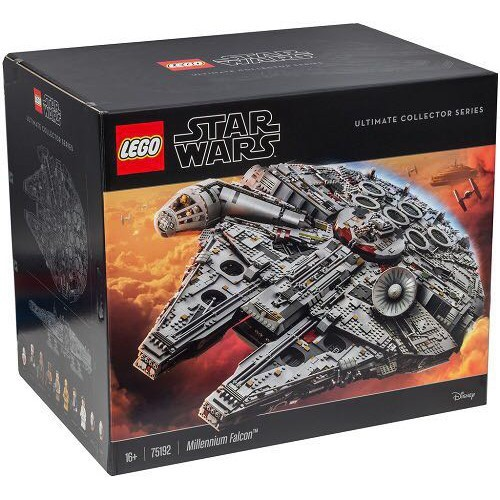

1996
My siblings and I won 10 LEGO buckets from a colouring competition.
Since then, I have fallen in love with LEGO and have a strong desire to collect LEGO sets.
My siblings and I won 10 LEGO buckets from a colouring competition.
Since then, I have fallen in love with LEGO and have a strong desire to collect LEGO sets.
Was finally able to purchase a LEGO set on my own. My first purchase was the retired LEGO set
LEGO collection started to be more serious after the addition of LEGO modular buildings into my collection.
Managed to grab a limited edition LEGO set - LEGO Batpod!
Further expanded my LEGO modular collection with the addition of a LEGO interpretation of the firehouse featured in the movie Ghostbuster!
The ultimate addition to my collection! The LEGO set with the highest number of LEGO elements (bricks) thus far!
